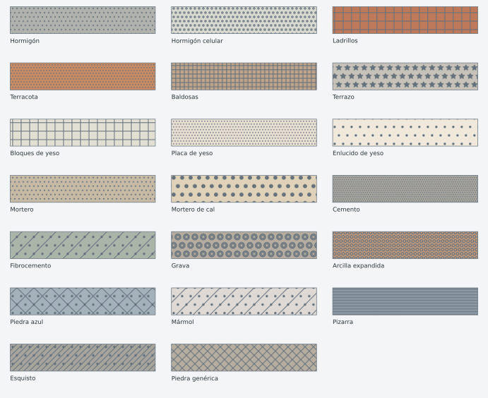
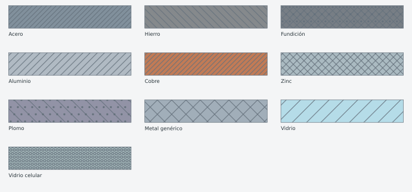
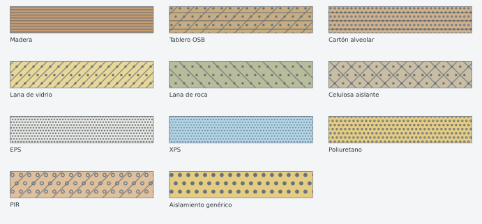
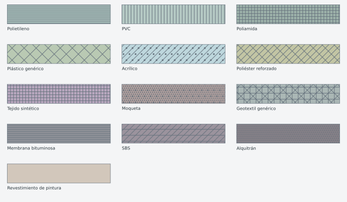
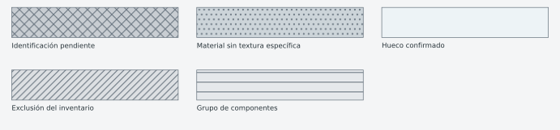

Explorador privado DECUB
El explorador permite consultar el catálogo, inventario físico y procedencia de PostgreSQL desde una interfaz local Streamlit. No modifica datos ni calcula intensidades. La documentación pública solo contiene ejemplos sintéticos.
Instalación y ejecución
Desde la raíz del repositorio, con el entorno virtual activo:
python -m pip install -e ".[visualization]"
python -m streamlit run src/decub/visualization/explorer.py --server.address 127.0.0.1 --server.port 8501 --browser.gatherUsageStats false
Abrir http://127.0.0.1:8501. Requiere la configuración PostgreSQL local y acceso autorizado. Detener con Ctrl+C. No abrir el puerto a otras redes ni desplegar en servicios públicos. Preferir un rol PostgreSQL con permisos exclusivamente SELECT; la aplicación inicia transacciones de solo lectura, lo que no sustituye el control de permisos del servidor. No se implementa autenticación multiusuario. No publicar capturas, valores o descargas de datos reales.
Navegación
| Sección | Consultas |
|---|---|
| Inicio | Recuentos de entidades, incluyendo versiones históricas |
| Visor constructivo | Tarjetas por grupos, dibujos texturizados, ventanas esquemáticas y diagnóstico del modelo |
| Navegador de edificios | Selección territorial y de modelo, desgloses, fichas y esquemas proporcionales |
| Materiales | Identidades, propiedades, alias y clasificaciones |
| Clasificaciones | Sistemas, versiones, nodos y referencias a padres |
| Edificios y modelos | Ámbitos, manzanas, edificios, modelos y mediciones |
| Elementos | Identificadores, medidas, subtipos y asociaciones |
| Composiciones | Versiones, partes y mediciones agregadas |
| Fuentes | Referencias, archivos y localización de registros |
| Importaciones | Adaptador, estado, fechas y estadísticas |
| Calidad | Densidad escalar ausente, opacos sin asociación y mediciones de parte sin valor |
| Cobertura lingüística | Cobertura de etiquetas por entidad e idioma |
En las secciones de tablas, seleccionar entidad, filtrar por identificador, buscar texto literal y paginar (hasta 100 filas por página). Seleccionar una ficha para consultar las relaciones directas de la fila (hasta 100 registros por relación); para continuar la navegación, utilizar los identificadores de las claves foráneas en las entidades correspondientes. Las partes de una versión constructiva pueden consultarse por su identificador, conservando posición y padre. No se selecciona automáticamente una versión científica efectiva. Los recuentos de calidad incluyen versiones históricas; no representan cobertura de masas ni validación científica. No se convierten nulos en ceros. Los valores decimales se muestran como texto para preservar precisión.
flowchart LR
A[Streamlit local] --> B[Consultas acotadas SQLAlchemy]
B --> C[(PostgreSQL: transacción de solo lectura)]
C --> ALas consultas tienen límite de tiempo de sentencia y paginación. Se omiten payloads originales, configuración de importaciones y rutas de almacenamiento; los identificadores permiten seguir la procedencia. No hay caché persistente de datos. La interfaz no incluye exportadores; el navegador puede permitir copiar datos visibles. El navegador y las tablas comparten los mismos datos y transacciones de solo lectura. El visor 3D, las secciones físicas certificadas y las gráficas de masas e intensidades quedan para fases posteriores.
Navegador de edificios y visualizaciones
En la barra lateral, seleccionar Navegador de edificios. Elegir ámbito, manzana, edificio y versión del modelo; cada selector admite búsqueda y paginación. Las vistas trabajan exclusivamente con la versión seleccionada, no con la suma de modelos históricos.
| Vista | Visualización y navegación |
|---|---|
| Desglose | Recuento, superficie registrada y cobertura por tipo de elemento, tipo original, categoría original, orientación o construcción original de opacos |
| Elementos | Filtrar por los mismos grupos, buscar y seleccionar un elemento; consultar identificadores, mediciones, propiedades térmicas, asociaciones y sus versiones constructivas |
| Composiciones | Elegir una versión vinculada a elementos o con mediciones de parte del modelo, incluyendo composiciones sin asociación a elementos |
El desglose de superficie incluye solo elementos con exactamente una medición de tipo area, unidad m2, valor conocido y calidad distinta de unknown. Si hay alternativas, se excluye el elemento del total de área sin excluirlo del recuento. Se informa del número de elementos con y sin área utilizable por grupo. Los grupos sin valores conservan área nula; los gráficos omiten esos valores. La suma de áreas registradas no equivale a superficie útil, bruta o neta del edificio: no resuelve solapamientos entre elementos ni permite sumar mediciones individuales y agregadas. La cobertura de asociaciones opacas cuenta elementos con al menos una asociación no retirada; no certifica equivalencias ni disponibilidad de masas. La vista de construcción original solo incluye opacos. Las categorías originales no son clasificaciones científicas del catálogo. Si hay más de 100 grupos, no se muestran totales o gráficos parciales como si fueran completos.
Esquemas constructivos y ventanas
La sección esquemática usa franjas de ancho proporcional al espesor original en milímetros y orden de posición. Solo se dibuja si todas las partes de la versión están disponibles (máximo 100), son planas, tienen posiciones únicas y espesores positivos y finitos. No se asignan texturas o colores por material: los colores distinguen posiciones. La suma de espesores es aritmética, no una certificación de espesor físico; las partes importadas como source_part pueden representar componentes distintos de capas en serie. Si la lista es jerárquica, incompleta o tiene espesores desconocidos, se conserva la tabla sin dibujar una sección ficticia.
Las mediciones de partes se filtran por modelo y versión constructiva. Se muestran por separado superficies (m2) y volúmenes (m3), sin acumular partes, combinar unidades, elegir alternativas ni repartir datos agregados entre elementos. Los gráficos se limitan a una lista completa de hasta 100 registros; las tablas permiten paginar. Un valor cero conocido no equivale a un dato ausente.
En una ventana con fracción de marco conocida entre 0 y 1, se representa una barra proporcional de marco y resto (vidrio bajo la hipótesis marco/vidrio). No se infieren dimensiones, geometría, espesores ni composición. Las propiedades térmicas se mantienen como datos registrados. Los gráficos usan números aproximados para representación; las tablas conservan los decimales de origen.

Visor constructivo arquitectónico
En la barra lateral, abre Visor constructivo y elige edificio y versión del modelo. La vista simplificada conserva el navegador científico y utiliza las mismas consultas de solo lectura. Las tarjetas se paginan de seis en seis y muestran recuento y área individual utilizable, con su cobertura; no se mezclan modelos ni mediciones alternativas.
| Vista | Criterio de agrupación |
|---|---|
| Cerramientos opacos | Nombre de construcción original y versión de la única asociación no retirada; sin asociación o con varias asociaciones se muestran como grupos pendientes, sin elegir una composición |
| Ventanas | Nombre de hueco registrado y fracción de marco; no constituye una clasificación geométrica o material |
Las composiciones con lista plana completa de espesores positivos y finitos se dibujan en perspectiva oblicua, con anchos proporcionales y altura y profundidad simbólicas. El número identifica la posición original. Sin versión de correspondencias seleccionada, los colores y tramas son ilustrativos y se seleccionan por palabras reconocibles en la descripción de origen. Si no hay una única familia reconocible, se utiliza una textura neutra. No se certifican capas en serie, orientación interior/exterior ni identidad, densidad o masa de los materiales. Las listas incompletas o jerárquicas conservan sus descripciones sin dibujo proporcional.
Las ventanas se representan como un cuadrado normalizado con borde de anchura uniforme. Si la fracción de marco es f, el lado de la superficie restante es la raíz cuadrada de 1 − f. Así se conserva la proporción de área, no las dimensiones reales ni el grosor físico del perfil. El marco tiene aspecto neutro, sin asumir aluminio u otro material. El resto solo se interpreta como vidrio bajo la hipótesis marco/vidrio. Si falta la fracción, no se dibuja una ventana ficticia.
Los gráficos de recuento y superficie del navegador científico utilizan barras horizontales ordenadas, etiquetas de valores y una paleta coherente. Los dibujos emplean un fondo de papel neutro legible en ambos temas; no se adapta dinámicamente la paleta del dibujo. Las figuras son locales, estáticas y no requieren recursos gráficos externos. Para composiciones sin elementos asociados, mediciones agregadas y trazabilidad, utiliza el navegador científico. Ninguna de estas representaciones calcula cantidades materiales.
Diagnóstico del edificio
El visor abre por defecto Resumen general, con recuentos de elementos, cobertura de área individual, distribución, estado de cuantificación y diagnóstico del modelo. La navegación separa el resumen, cerramientos opacos, ventanas, inventario de materiales y diagnóstico del edificio. Abre Diagnóstico del edificio para filtrar por gravedad y tipo de incidencia y seleccionar una ficha. El resumen por regla es visible sin desplegar controles: incluye gravedad, número de registros, elementos distintos relacionados y explicación de la consecuencia. Las tarjetas muestran su estado, recuentos por gravedad y tipo, y permiten abrir el diagnóstico filtrado. El botón Ver diagnóstico de todo el modelo elimina el filtro de tarjeta. El diagnóstico es de solo lectura y se obtiene de los registros actuales; no guarda resultados ni modifica el estado de revisión.
| Gravedad | Interpretación |
|---|---|
| Error | Dato no utilizable para la comprobación concreta; no demuestra que todas las vías de cuantificación sean inviables |
| Aviso | Ausencia, alternativa, asociación o riesgo que requiere revisión |
| Observación | Característica registrada o limitación de representación que no equivale necesariamente a un defecto |
| Ámbito | Reglas disponibles |
|---|---|
| Elementos | Área ausente, alternativa, no utilizable o cero; propiedades opacas o de ventana ausentes; fracción de marco ausente o fuera de rango |
| Asociaciones | Opacos sin asociación no retirada o con varias; asociaciones en borrador y versiones retiradas vinculadas |
| Composiciones y partes | Composición sin partes; espesor desconocido o cero; partes anidadas; partes sin mediciones del modelo |
| Mediciones de parte | Valor ausente/calidad desconocida; unidad no esperada para área o volumen; alternativas del mismo tipo |
| Cobertura | Coexistencia de mediciones de área individual y de área/volumen de parte para una versión; composición medida sin elementos vinculados |
Cada incidencia corresponde a una regla y una entidad identificada. Una entidad puede tener varias incidencias. Se distingue el número de ocurrencias de la regla del número de elementos distintos relacionados: para incidencias directas se cuenta el elemento propio; para incidencias compartidas, los elementos vinculados a la versión mediante asociaciones no retiradas en el modelo seleccionado. El filtro de tarjeta restringe este último recuento a sus elementos. Una composición sin vínculos puede tener incidencias y cero elementos relacionados. No se suman elementos entre reglas ni se interpreta este recuento como cobertura de masa. Los diagnósticos de partes y composiciones incluyen las versiones vinculadas por asociaciones no retiradas o medidas en el modelo. Las mediciones de otros modelos nunca completan los datos del modelo seleccionado. La coexistencia de resoluciones señala un riesgo que debe resolverse metodológicamente, no demuestra un solapamiento real. Una asociación múltiple puede representar componentes legítimos. Un cero conocido permanece distinto de un valor ausente.
Las tarjetas incluyen incidencias directas de sus elementos y, para una composición única, las incidencias compartidas de su versión y partes. Una incidencia compartida puede aparecer en varias tarjetas; no se suman sus recuentos para obtener el resumen del modelo. Las composiciones sin asociación y las incidencias no atribuibles a una tarjeta concreta se consultan en el diagnóstico global. Las fichas muestran registros originales, identificadores y mediciones; para una incidencia compartida, se pueden paginar los elementos asociados a la versión dentro del modelo, sin afirmar que todos estén afectados del mismo modo. La lista de incidencias se pagina de 100 en 100; los recuentos no se limitan a la página.
No se comprueba aún la correspondencia material efectiva para un perfil de cálculo, la densidad efectiva, la cobertura de masas ni el cumplimiento de una metodología de cálculo. La futura cuantificación debe compartir un único motor científico, con perfiles y métodos explícitos, contribuciones trazables y diagnóstico de cálculo. Mientras no exista, Inventario de materiales muestra masa y volumen pendientes y cobertura no evaluada; el resumen y las tarjetas también señalan la masa pendiente, sin mostrar valores cero ficticios. La cobertura de área individual del resumen no equivale a cobertura de masa. Ausencia de incidencias en las reglas actuales no certifica la validez científica del inventario.
Identificaciones revisadas
El selector de versiones de correspondencias del visor es explícito y por defecto no selecciona ninguna. Con una versión revisada, las tarjetas de opacos muestran nombres del catálogo para las identificaciones individuales admitidas y texturas por identidad del catálogo; las demás partes quedan neutras, con una trama distinta para exclusiones justificadas. La textura sigue siendo representativa y no certifica propiedades físicas. Las ventanas mantienen el esquema normalizado, sin asignar material al marco por su aspecto.
El inventario de materiales muestra estados y justificaciones por parte y recuentos de identificaciones distintas, no cantidades. En el diagnóstico se distinguen partes identificadas, pendientes, excluidas, sin decisión y asignaciones no utilizables por este visor. Los elementos relacionados son distintos por estado y asociación no retirada, no deben sumarse entre estados. Las composiciones medidas sin elementos pueden tener cero relacionados. Las tarjetas muestran pendientes y exclusiones de la lista de partes visible. Las 22 reglas de diagnóstico físico son independientes. Véase el procedimiento de revisión.
Etiquetas multilingües
El selector Idioma / Language / Langue de la barra lateral controla todo el explorador en la sesión (ES por defecto, EN y FR). Los textos de navegación, controles, diagnósticos, cabeceras y gráficos se localizan mediante visualization/i18n.py e i18n_messages.py. Las entidades utilizan las etiquetas editoriales vigentes de PostgreSQL; si faltan, se conserva el original. Los códigos, identificadores, justificaciones y valores originales no se reescriben. Los valores de dominio se traducen por contexto en presentación; las categorías de origen sin correspondencia documentada y los códigos de orientación no interpretados permanecen como códigos. Los formatos decimales usan coma en ES/FR y punto en EN, sin redondear las tablas de valores Decimal. Las etiquetas de navegación no se usan como criterios científicos. Las opciones de los selectores se convierten explícitamente desde el texto visible a su identidad interna. Al cambiar de idioma se mantiene el apartado activo y se conserva cada selección de lista si sigue disponible; si desaparece, se selecciona la primera opción disponible. Las denominaciones coincidentes se distinguen mediante su identificador. Las selecciones de navegación y de filtros pueden mantenerse durante la sesión.
La sección Cobertura lingüística presenta por entidad e idioma el total aplicable, etiquetas vigentes, ausentes, obsoletas, no aplicables y originales revisadas. Si no hay denominador, el porcentaje es nulo, no 0 ni 100 %. Utiliza la auditoría de solo lectura existente dentro de una instantánea repetible; no exporta ni modifica datos. La cobertura no implica validación lingüística especializada, ni traducción de textos originales, ni cobertura científica.
Desglose de componentes
Selecciona una versión de correspondencias revisada. En los cerramientos, abre Desglose para una parte compuesta o Detalle para una identificación individual. El inventario de materiales permite seleccionar composición y parte, también cuando no hay elementos vinculados. En ventanas se muestran las composiciones explícitamente vinculadas, con el recuento de elementos de cada vínculo. Las composiciones de carpintería con desglose sin vínculo individual se muestran aparte, sin atribuirlas a las ventanas. La identificación y las etiquetas siguen la versión y el idioma seleccionados.
Los detalles reutilizan plantillas de dibujo para hormigón armado y reforzado con fibras, forjados nervados, fábricas de ladrillo, perfiles con rotura térmica, placas y membranas. Los productos sin plantilla disponen de una representación simbólica de componentes; las identificaciones individuales muestran una muestra de textura. Las rutas del árbol enlazan con las marcas del dibujo y la leyenda. Una plantilla se elige por descripción y etiquetas de nodos, solo con finalidad gráfica; las texturas de material provienen de identidades revisadas. Los componentes pendientes y geometrías no acreditadas se representan de forma neutra. La leyenda gráfica incluye hasta doce nodos; el árbol textual conserva todos los componentes y justificaciones. No se añade una capa de compresión al esquema del forjado.
| Dato | Representación |
|---|---|
| Espesor original positivo | Se indica el valor registrado de la parte, no un espesor validado de sus hijos. |
| Espesor desconocido | Dimensión sintética de ejemplo si existe plantilla; en otros casos, representación simbólica sin medida. |
| Geometría interna | Ilustrativa, sin escala ni fracciones aprobadas. |
| Densidad de catálogo | Candidatos por código de material, identificador de propiedad, valor o intervalo, estado y referencias de procedencia; hasta ocho por material, sin selección automática. |
| Densidad efectiva o cuantía de armadura | Pendiente de selección metodológica; no se deduce de las formas dibujadas. |
La dimensión sintética es exclusivamente gráfica y no constituye un valor estándar normativo. Las cantidades desconocidas no se imputan, ni se guardan parámetros de los dibujos en PostgreSQL. La densidad del acero (masa por volumen de acero) no determina la cuantía de armadura (masa de acero por volumen del compuesto) ni su distribución geométrica. La futura cuantificación deberá proporcionar las dimensiones y fracciones justificadas de cada subcomponente, diferenciando densidad efectiva y parámetros de dibujo. Los detalles actuales no calculan masas ni certifican la configuración del producto.
Galería de texturas y convenciones gráficas
En Galería de texturas, consulta páginas de 24 registros y busca por código, original o traducción vigente. La galería utiliza el selector global. Se muestran código, estado y textura por identidad; en ausencia de etiqueta vigente se conserva el original. No se editan datos desde la galería.
El módulo visualization/material_textures.py centraliza recetas inmutables de color y trama vectorial y vinculaciones explícitas por código estable del catálogo. La biblioteca reutiliza la función de generación de códigos del adaptador de referencia; cambiar una traducción, el idioma o el identificador numérico de PostgreSQL no cambia la textura. Las secciones proporcionales, los detalles y las leyendas reutilizan las mismas recetas. Antes de elegir una revisión, la ilustración léxica sigue siendo provisional y no identifica materiales.
Las siguientes láminas muestran el vocabulario gráfico genérico, no un listado de materiales presentes en un edificio ni una exportación del catálogo privado. Los patrones son simbólicos: su densidad gráfica, puntos, círculos, líneas y colores no indican porosidad, fracciones, geometría, densidad física ni color real. Las plantillas constructivas aportan diferencias de forma (por ejemplo, bovedillas frente a matriz de hormigón) sin cambiar la identidad material.
Minerales y productos cerámicos

Metales y vidrios

Madera y aislamientos

Polímeros, textiles y membranas

Estados de representación

| Estado | Interpretación |
|---|---|
| Identificación pendiente | No hay identidad utilizable; también se aplica a materiales retirados en las vistas de revisión. |
| Sin textura específica | Existe una identidad, pero no una convención gráfica inequívoca o una vinculación explícita. |
| Hueco | Nodo de hueco explícitamente definido; no es una asignación de material ni una imputación de masa cero. |
| Exclusión | Decisión justificada de exclusión; no elimina la parte del inventario físico. |
| Grupo | Nodo organizativo, sin asignación de material propia. |
Para ampliar la biblioteca, añadir o reutilizar una receta con etiquetas ES/EN/FR y asociar el código estable explícitamente en CODE_TEXTURES. Los códigos nuevos sin vinculación conservan la trama genérica de material sin textura específica; no se deduce una identidad por similitud de nombres. Los nombres comerciales o ambiguos no requieren inventar su apariencia o composición. Las altas materiales y las densidades se gestionan científicamente por separado.
Para regenerar las láminas genéricas después de modificar las recetas, con el extra de visualización instalado:
python tools/build_texture_gallery.py
python tools/check_docs_languages.py
El generador no consulta PostgreSQL ni archivos de origen. No publicar capturas de la galería privada ni de edificios reales.
Etiquetas editoriales ampliadas
Los nombres de elementos que coinciden con identificadores externos y los nombres de niveles iguales a su código no se traducen. La auditoría distingue estos casos y los nombres vacíos mediante not_applicable. Los nodos conservan las etiquetas revisadas ES/EN como retorno; las traducciones editoriales vigentes tienen prioridad en la presentación y el francés retorna al español si falta.